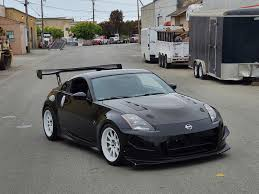
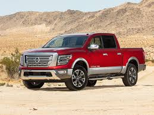

Ավտոմեքենաներ
Nissan GTR

2024 թվականի GT-R-ն ունի վերափոխված առջևի բամպեր, առջևի շրթունք և թարթիչներ: Հետևի մասում, բամպերի կողքերը և վերանայված հետևի սփոյլերը օգնում են GT-R-ին ավելացնել ներքևի ուժը՝ առանց ավելացման:
3.8 լիտրանոց երկտուրբո շարժիչը, որը կառուցված է հսկայական ուժով, արտադրում է մինչև 565 ձիաուժ հզորություն և նույնքան ահռելի 467 lb-ft ոլորող մոմենտ:
Ճանապարհային մեքենայում երբևէ օգտագործված ամենաառաջադեմ լիաքարշակ և տրանսպորտային միջոցների դինամիկ կառավարման համակարգերից մեկի շնորհիվ դուք ստանում եք հետևի շարժիչի զգացողություն և արձագանք՝ լիաքարշակի վստահությամբ:
Յուրաքանչյուր GT-R կարող է կրել իսկական պատվո նշան, որը ձեռքով հավաքվել է աշխարհի վեց վարպետ Տակումի արհեստավորներից մեկի կողմից, ով իր անունը փակցնում է հուշատախտակի վրա: AS Class-ի վարորդները՝ Nissan-ի զարգացման լավագույն վարորդները, օգնում են ստեղծել մի մեքենա, որը փայլում է ինչպես ճանապարհի, այնպես էլ ուղու վրա, ներառյալ Autobahn-ի փորձագետը, «շուկայավարման» փորձագետը և «Ringmeisters»-ը, ովքեր փորձարկում են GT-R-ը լեգենդար Նյուրբուրգրինգում:
Nissan 350Z

Nissan 350Z-ը ևս մեկ հավակնորդ էր շատ զբաղված հատվածում և երբեք հեռու չէր մրցակից խմբային փորձարկումներից: Մինչ 350-ը եկավ, մեկ տասնամյակ Մեծ Բրիտանիայում չկար Zed մեքենա, և 240-ականների ժառանգության արթնացումը՝ մեծ, բնական շնչառությամբ վեց մխոցանի շարժիչ, մեխանիկական փոխանցումատուփ, հետևի անիվի շարժիչ, անկասկած օգնեցին սկզբնական հաջողությանը: . Նրա մկանուտ տեսքը նույնպես դեր է խաղացել։ Եվ եթե դա աշխարհի ամենաթեժ սպորտային մեքենան չէ վարելու համար, ապա մկանային մեքենայի հանդեպ նրա վարքագիծը նրան ավելի շատ երկրպագուներ է շահել: Եվ այս ամենը ոչ շատ փողի դիմաց՝ մոտ 25 հազար ֆունտ ստեռլինգ արժողությամբ:
350-ը լավ ժողովրդականություն է վայելել վաճառքի իր կես տասնյակ տարիների ընթացքում, իսկ 370Z-ը, որը փոխարինել է դրան, երբեք նույն կերպ չի գրավել երևակայությունը՝ չնայած այդքան ընդհանրություններին: Դրա մի մասը, իհարկե, կապված կլինի ժամանակի հետ. 25 mpg սպորտային մեքենան շատ ավելի իմաստալից էր 2003-ին, քան 2009-ին: Այն ժամանակ շատ վաճառված և առանց հատուկ մոդելների, 350-ը ժամանակի ընթացքում իսկապես էժանացավ. շատերը դրիֆտվեցին, մրցարշավով կամ վերածվեցին Fast & Furious կրկնօրինակների: Լավ կուպե գտնելու փորձը դրա մեկնարկից ավելի քան 20 տարի անց այնքան էլ հեշտ չէ, որքան կարելի է ակնկալել:
Nissan Titan

Nissan-ը ներկայացրել է երկրորդ սերնդի Titan-ը 2015 թվականի Հյուսիսային Ամերիկայի միջազգային ավտոսրահում: Ընկերությունն ասում է, որ իր նպատակն է 5 տոկոս շուկայական մասնաբաժին կամ տարեկան 100,000 վաճառք Միացյալ Նահանգներում (2016 թվականին վաճառքը հասել է 21,880 միավորի): Ստանդարտ շարժիչը 5,6 լիտրանոց V8 բենզինային շարժիչ է: Շարժիչը նախորդ մոդելի համեմատ ավելի հզոր է դարձել՝ արտադրելով 390 ձիաուժ։ և 534 Նմ ոլորող մոմենտ՝ զուգակցված յոթաստիճան ավտոմատ փոխանցման տուփի հետ: Բացի այդ, մինչև 2019 թվականի վերջ երկրորդ սերնդի Titan-ն առաջարկում էր 5.0 լիտր ծավալով Cummins ISV տուրբոդիզելային շարժիչ՝ 310 ձիաուժ հզորությամբ և 752 Նմ պտտող մոմենտով։
Երկրորդ սերնդի Titan-ը հասանելի է երկու տարբերակով՝ սովորական և XD: XD տարբերակը կառուցված է ուժեղացված շրջանակի վրա, որը հիմնված է Nissan-ի առևտրային մեքենաների շարքի վրա և ներառում է լրացուցիչ Cummins դիզելային շարժիչ:
2020 թվականի համար Nissan-ը ներկայացրել է նորացված Titan և Titan XD մոդելները: 2020 թվականի համար սովորական տաքսի մոդելը հանվել է ինչպես սովորական, այնպես էլ XD շարքից, և Titan XD-ի համար King Cab մոդելներն այլևս հասանելի չեն եղել: 5.0 լիտրանոց Cummins տուրբոդիզելային V8 շարժիչը, որը հասանելի էր ավելի հզոր Titan XD-ի վրա, նույնպես դադարեցվել է՝ թողնելով միայն 5.6 լիտրանոց «Endurance» բենզինային V8: Նոր Jatco ինը արագությամբ ավտոմատ փոխանցման տուփը փոխարինում է նախկին յոթաստիճան ավտոմատ փոխանցման տուփին: 2020 թվականի նոր Nissan V8-ն արտադրում է 400 ձիաուժ և 560 Նմ (390 ձիաուժ կամ 290 կՎտ հզորությունից և 394 ֆունտ-ֆտ կամ 534 Նմ):